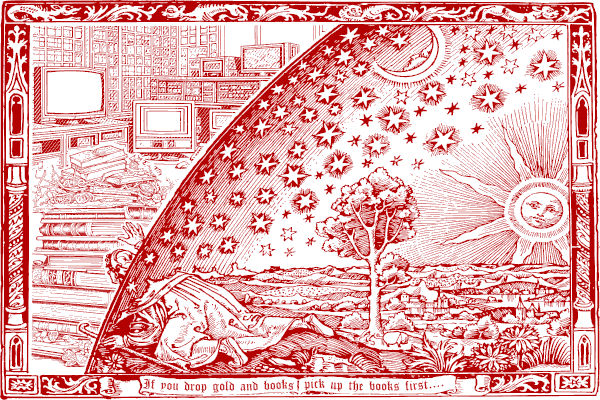
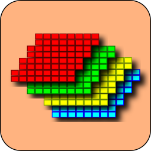
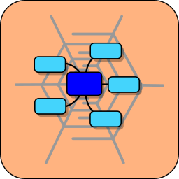
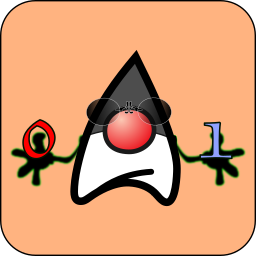

Chronicles of Igor Maznitsa
In days of yore, I came into this world and was reared in a now-forgotten realm called
Leningrad, once the second grandest city of the USSR. My tale begins within the halls of School 421, where,
in
the year of our Lord 1987, I embarked on a wondrous journey of enlightenment in the mystical art of
programming,
within the sanctum of the educational and production combine. For two cycles of the seasons, I delved into
the
arcane scrolls of BASIC, conjuring code for the mystical contraption known as the BK-0010. My heart was so
enamored with the mystical art of coding that I delved ever deeper into the ancient tomes of computer
languages
and architectures, vowing to intertwine my life with the enigmatic craft of programming. Yet, by the hand of
destiny, my talents did not align with the path of a true programmer within the hallowed walls of the
technomancer's academy. Instead, I found myself compelled to embrace the role of a radio sorcerer, a
technician
of the ethereal waves.
After my service in the army, I was summoned to toil for a company skilled in the
conjuring
of computer spells. There, I earned my keep with the craft I had mastered. My maiden foray into the realm of
commercial programming involved the enchanting language known as Delphi. However, in the year of our Lord
1999,
I embarked upon a quest to explore a new and wondrous sorcery known as Java, henceforth inscribing my
incantations solely in this bewitching, nascent art of computer magic. Many a computer spell I did conjure.
From
the year 2001 to 2007, my efforts were primarily devoted to crafting enchanting games for mobile telephonic
devices. Dozens of these games were birthed, and my tale even found its place within the tome known as "The
History of Finnish Video Games." As I forged these mobile games, I did not forsake the realm of enterprise,
for
I crafted systems of program conjuration and ethereal solutions for the servers. Yet, deep within my heart,
there lay a yearning for the mysteries of artificial intelligence and the quest for the meaning of life. In
the
year of our Lord 2010, I, at long last, embarked on a journey to uncover the secrets of the Prolog language,
a
craft that left me spellbound with its mystical abilities.
On mine thought, the contemporary crafters of code art do inherit the mantle of those
ancient
sorcerers who wrought in the Middle Ages. Their quests still dwell in the fashioning of the philosopher's
stone
and the homunculus. Such tasks did they pursue yore, they labor now, and they shall labor henceforth.
In the year 2013, I came to a realization that the land of Russia, in which I had dwelt,
had
fallen under the sway of malevolent forces and was descending into darkness. I resolved to embark on a
journey
to another blessed, albeit small, realm known as Estonia, where it was whispered that the arcane arts of
computer science thrived and programmers found solace. Taking my kin with me, I relocated to the ancient
city of
Tallinn, nestled upon the shores of the Baltic Sea, to labor within a renowned startup, crafting spells of
code
for fellow magicians of the digital realm. In this new land, my life flourished, and I, in the comfort of my
abode, began to weave enchantments of open-source code, which I bestowed upon the people to bring them joy
and
wisdom.
Since that time, I have dwelt in the realm of Estonia, partaking of bread and quaffing
ale,
which I wish upon all of you as well. And should anyone wish to peruse my chronicles in the scrolls of
social
networks, you are most welcome to follow the links to those realms. But if any heart desires to behold my
dearest enchantments, let it not hesitate to press the button and journey to the repository of code. And if
one's soul finds delight therein, let them offer me a small pouch of gold for ale and solace, that I may
know my
labor is both worthy and true.

|
 |
|  |  |
Verily, the final section doth holdeth links to ancient and wondrous relics, which mayhap
still hold allure for certain souls (forsooth, I have heard tell of my former comrades employing them for
presentations). I hath crafted modest descriptions and captured images from bygone creations and endeavors,
wherein I played a role in their fashioning, especially those adorned with graphical interfaces. For the
utilities of mundane use, I hath provided brief descriptions, yet for the diversions of play, only images,
for
verily, in the realm of arcade amusements, a mere glimpse doth suffice.